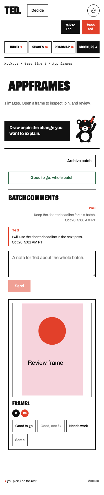
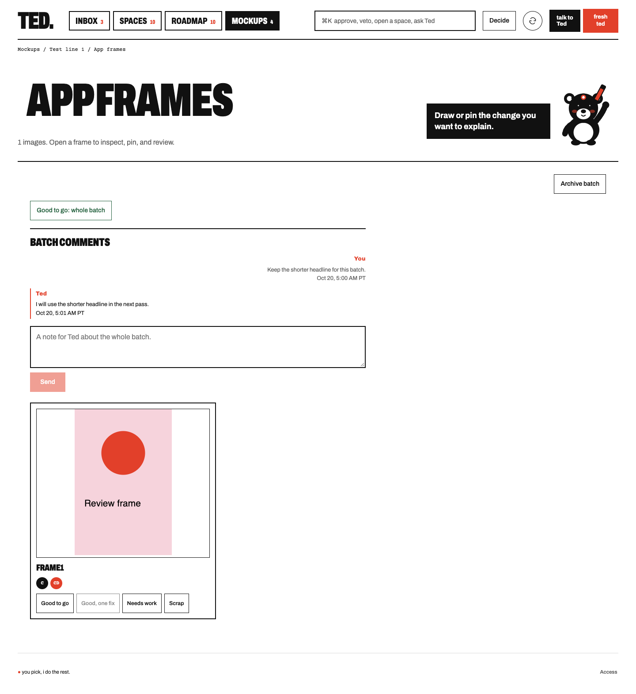
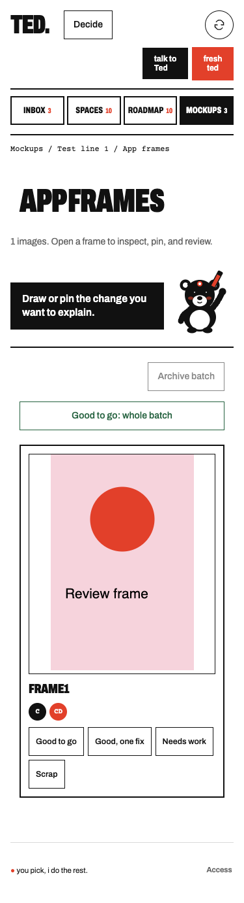
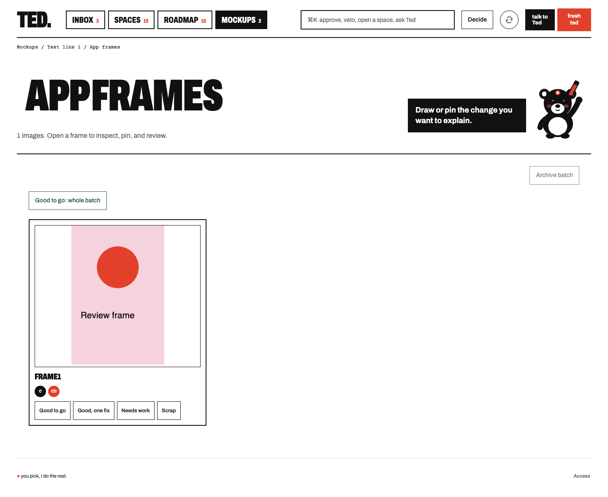
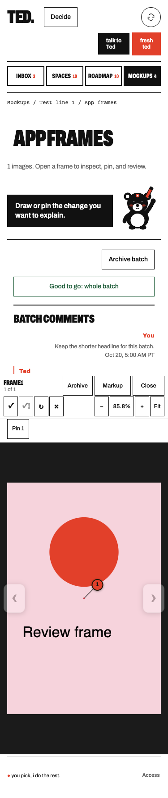
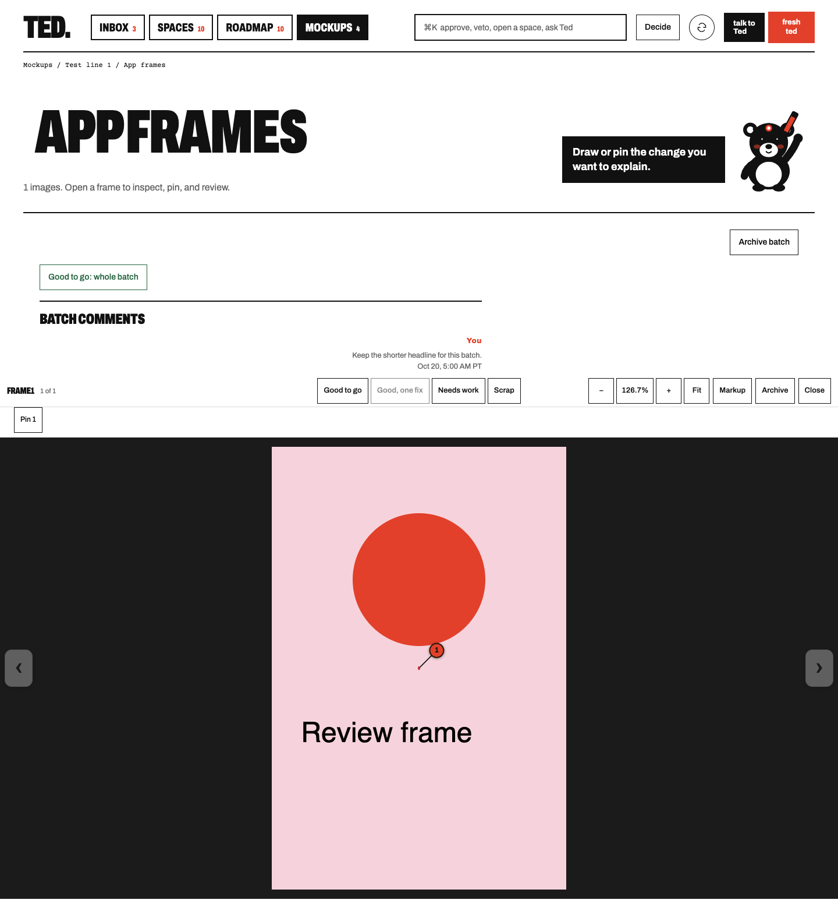

Finals and comparisons












Technique: value grouping, hard structural edges, and a shared left edge. Eight thumbnails led to layout 2, which keeps the history and composer directly below existing batch controls. The existing Archivo type, paper, ink, wash, and red action color carry the hierarchy.
Critique: the conversation reads at thumbnail size and in greyscale. Flipping the render preserves the shape hierarchy and reveals no collision. The 16-pixel inset keeps the composer aligned with the frames. The thread is capped at 240 pixels so long histories do not bury the art. Mobile wraps existing controls, while the compact viewer keeps its original height. One final pass retained the existing message labels and required a routing receipt before announcing delivery.
The Send button is disabled while empty or unsupported. The screenshot uses an enabled synthetic backend. Production sending stays disabled until Ted integrates the durable private pin transaction and verifies the worker reply path.
Read the full process notes. SQL, backend integration, and deployment remain held for Ted review.





